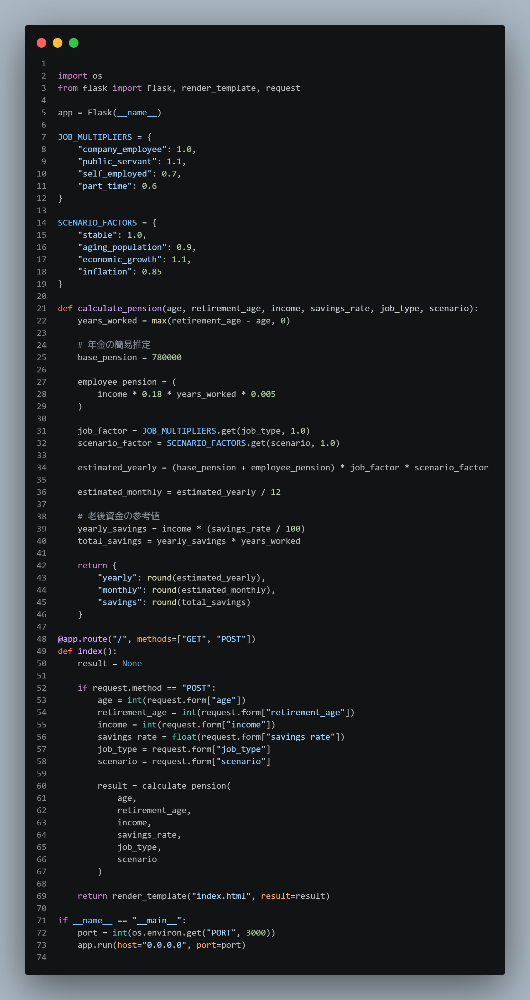
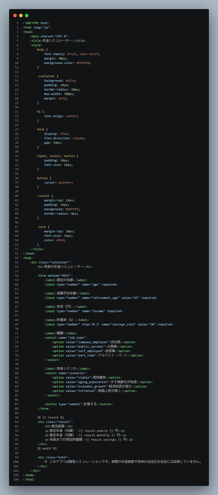
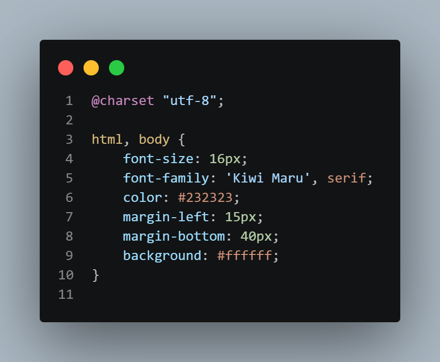
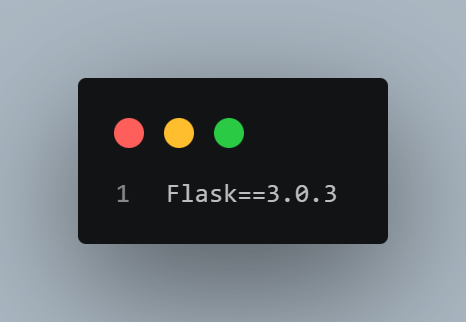

Flask
年金シミュレーター
将来、我々若者は年金をもらえない、受給額が少なくなるというような話をたびたび耳にする。そこで社会情勢などを考慮しながら将来の年金を予測できるアプリを作成した。
アプリの説明
職種、年齢、所得を簡易的に入力し、その結果定年後もらえる額をシミュレーションする。少子化や景気もいくつか指定することができる。
動画
app

html

css

requirements.txt

振り返り
機能を増やそうとするほど綻びが増え、どんどん崩れていってしまう点に苦しんだ。ほかのソフトや枠と合わせるともっと可能性が広がりそうなのでいずれチャレンジしてみたい。